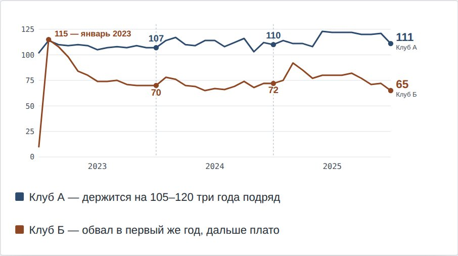
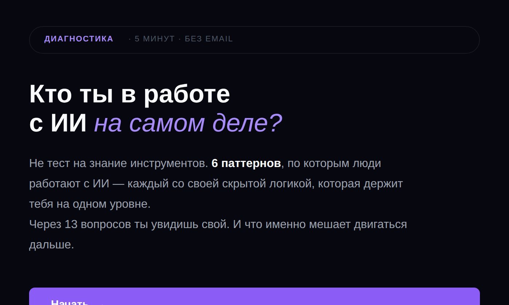
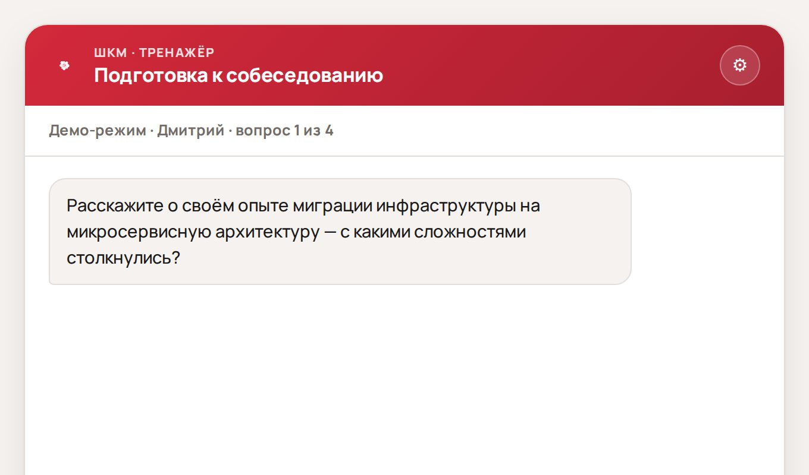
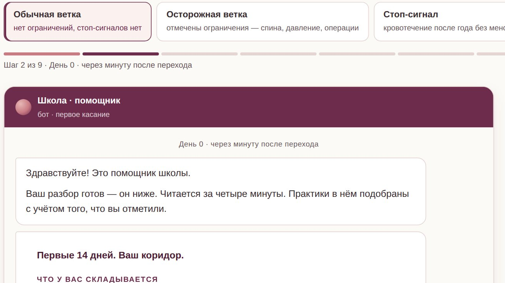
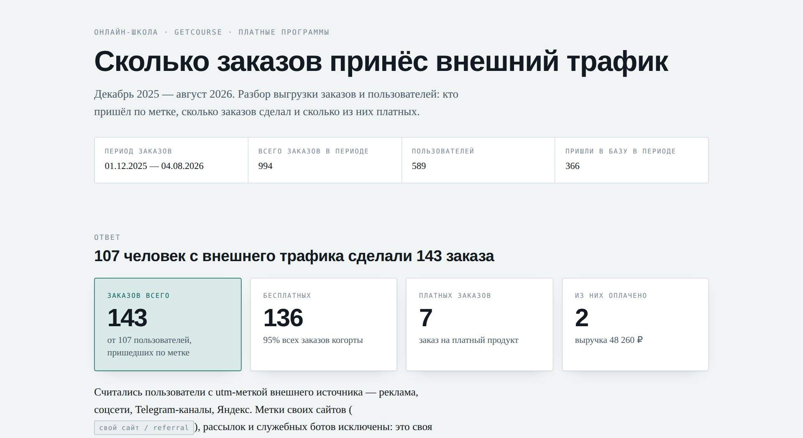
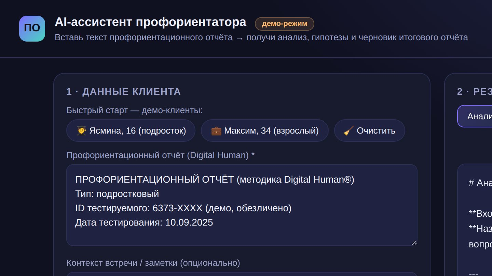
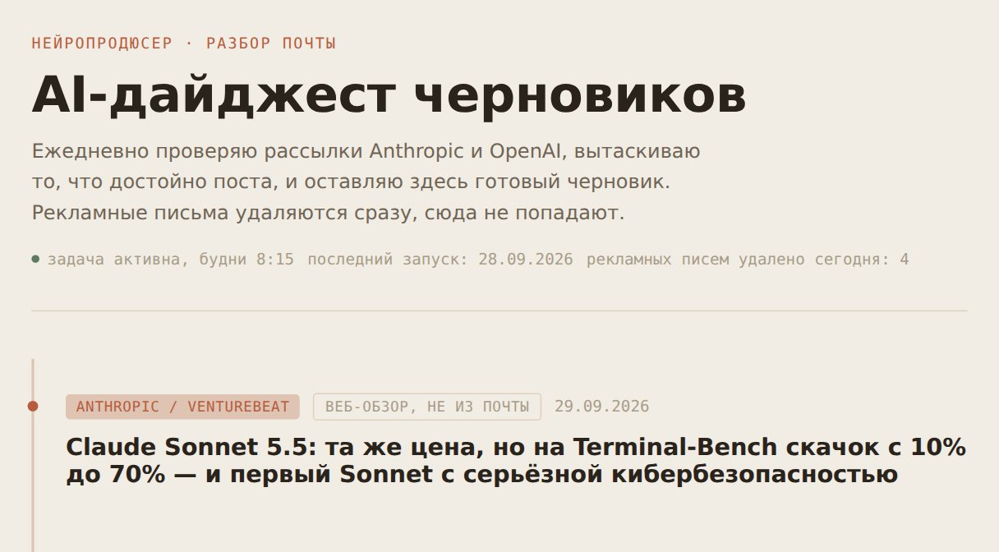

Каждый чат начинается с нуля
Контекст остаётся у вас в голове, а нейросеть достраивает недостающее по среднему сценарию.
Новый поток Старт 19 октября
Один ваш рабочий процесс — отчёт, исследование рынка, маркетинговый план — превращается в систему, которая работает на ваших материалах и по вашим критериям. Вы проверяете результат и запускаете снова, не начиная с нуля.

Светлана Винокурова — веду курс «Внедрение нейросетей в бизнес-процессы» на MBA Самарского университета, 13 лет руководила маркетингом на производстве.
Ваш рабочий контур
Решение и ответственность остаются у человека.
Почему не получается
Проблема редко в том, что вы знаете мало сервисов. Обычно между задачей, материалами и результатом просто нет связанной системы.
Контекст остаётся у вас в голове, а нейросеть достраивает недостающее по среднему сценарию.
Файлы, ссылки, инструкции и примеры живут в разных папках, чатах и вкладках.
Сегодня все хвалят Claude, завтра — Codex, послезавтра без «роя агентов» уже никак. Вы переключаетесь между сервисами, а сама задача так и остаётся несформулированной.
Хороший ответ остаётся случайностью: непонятно, какие вводные сработали и как передать процесс другому человеку.
Как это выглядит на практике
Пример: выбор новой категории для выхода на маркетплейс. Та же логика работает для маркетингового плана, исследования рынка или управленческого отчёта.
Диалог в чате
С ИИ-контуром
Примеры
Не ответ в чате, а готовая вещь: отчёт, квиз, тренажёр, воронка, задача по расписанию. Все примеры — мои работы, каждый можно открыть и посмотреть изнутри.
Листайте вбок →

Аналитика продаж

Квиз для воронки

Тренажёр для школы

Воронка для онлайн-школы

Маркетинг

Ассистент специалиста

Задача по расписанию
Как устроена программа
Вы смотрите урок и сразу переносите его на свой процесс. Закладывайте не меньше 4 часов в неделю.
10 часов видео короткими блоками. Уроки открываются по неделям, задания — на ваших материалах.
Групповые встречи в Google Meet по четвергам в 19:00 мск, по 2 часа.
Авторские помощники, промпты и инструкции для ChatGPT, Claude, DeepSeek и Qwen. Плюс гайды и чек-листы.
Доступ к урокам и материалам после потока. Бонусом — урок «Мой ИИ-контур»: моя рабочая система изнутри.
Отзывы
«До обучения я вообще не понимала, на какой козе к нему подъехать — пробовала вслепую. А сейчас у меня пять агентов, которые офигенно снимают головную боль при работе с текстами и материалами. Вчера из трёхчасового вебинара я сделала детальную методичку, добавила свои кейсы и примеры — всё заняло 40 минут. Сама бы делала пару дней. И я в роли проверяющего, а не делающего».
«Сразу после курса думала, что не буду использовать ИИ часто. А теперь почти каждый день что-то задействую. Вчера проводила обучение на конгрессе пациентских организаций — учила писать эффективные промпты. А перед лекцией в школе бизнеса сделала промпт для слушателей: они подставляли свои данные и получали описание задач и требований к должности, которую хотят занять через два года».
«Быстро понял, потому что уже изучал этот вопрос и кое-что знал. Изложение курса — чётко и кратко. Жаль, что не видел этого раньше: сэкономил бы кучу времени».
Форматы участия
Старт нового потока — 19 октября. Созвоны по четвергам в 19:00 мск, первый — 29 октября. Содержание программы одинаковое, цена зависит от объёма персональной работы со мной.
Самостоятельный
Для тех, кто готов пройти маршрут и внедрить его самостоятельно.
С личной встречей
Для тех, кому важно один раз разобрать свою задачу со мной лично — там, где это нужнее всего.
Встреча в начале — в первую неделю потока. Встреча в конце — после сдачи заданий, в течение 30 дней после окончания потока.
Индивидуальное внедрение
Для тех, кому нужна персональная работа на трёх ключевых этапах.
Первая — в начале потока. Вторая — после заданий первой половины. Третья — после заданий второй половины.
Оплачивая участие, вы принимаете условия публичной оферты и политики обработки персональных данных.
Программа по модулям
Инструменты появляются только после того, как понятны задача, контекст и критерий хорошего результата. Нажмите на модуль, чтобы увидеть подробности.
Инвентаризируем реальную работу, достаём наружу скрытые шаги и границу делегирования. Раскладываем задачи по частоте и затратам времени. Выбираем один главный процесс или до трёх рутинных задач.
Карта рабочего процесса и выбранная задача для внедрения
Собираем документы, примеры, правила, ограничения и критерии результата. Выстраиваем понятную структуру файлов и определяем, какие данные нельзя передавать нейросети.
Структурированные материалы, источники правды, правила и ограничения
Превращаем размытый запрос в рабочую инструкцию: контекст, полезная роль, детали, действие, формат результата и ограничения. Создаём постоянный контекст для выбранной задачи.
Понятное техническое задание и логика результата до запуска нейросети
Проверяем фундамент: выбранную задачу, структуру материалов и логику будущего решения.
Claude, Codex, NotebookLM, Perplexity, Gemini и Kimi. Разбираем, какой инструмент лучше справится с каждым участком вашего процесса: где искать и сверять источники, где разбирать большие документы и таблицы, где собирать отчёт или презентацию, а где хватит обычного чата. Не изучаем сервисы в вакууме — выбираем их под задачу.
Связка инструментов под конкретные этапы работы — без лишних подписок и хаотичных переключений
Соединяем задачу, базу знаний, инструкцию и инструменты в работающую систему и запускаем её на реальной задаче. На выходе — рабочий результат: документ, таблица, исследование, презентация или база знаний.
Рабочий документ, анализ, презентация, страница или другой нужный артефакт
Фиксируем последовательность, проверку, исключения и ответственность человека. Упаковываем решение в то, что можно запускать снова: проект, скилл, ассистента, агента или понятную инструкцию.
Сохранённый сценарий, который можно запускать снова и постепенно развивать
Разбираем готовые контуры и собираем карту дальнейшего внедрения на следующие шаги.
Перед стартом
Подойдёт, если отчёты, анализ и документы каждый раз собираются вручную; если вы уже пользуетесь ИИ, но хороший результат получается случайно; если хотите, чтобы нейросеть работала по вашим правилам. Опыт не обязателен. Не подойдёт, если нужен список чужих промптов или вы ждёте, что процесс настроят без вашего участия.
Да. Мы начинаем не с технических инструментов, а с вашей реальной работы. На первом уровне достаточно браузера, обычного чата, проектов и хорошей постановки задач.
Нет. Практику можно пройти в DeepSeek и Qwen: они работают в России без ограничений и хорошо справляются с рабочими задачами. Сервисы, для которых нужен VPN, мы тоже разбираем, но они не обязательны.
Не меньше 4 часов: уроки плюс работа над собственным процессом. Кто может уделять больше, быстрее получит рабочий результат.
Нет. Сначала вы определите задачу и только потом выберете нужный инструмент. Покупать пять сервисов «на всякий случай» не требуется.
Один сквозной процесс или до трёх повторяющихся задач. Например: подготовку аналитического отчёта, работу с клиентскими материалами, исследование рынка, создание документов или контентный процесс.
Материалы и групповые встречи остаются доступны. Итоговая встреча и письменная проверка проводятся после сдачи заданий: они нужны для работы с уже собранным фундаментом и контуром, а не для пересказа пропущенных уроков.
Нет. Вы получите систему, которая помогает выполнять процесс быстрее и стабильнее, но решение, проверка результата и ответственность остаются у человека. Если задаче нужны API, интеграции или разработка, это отдельный технический проект, а не скрытая часть программы.
Да. Доступ к записанным урокам, инструкциям, гайдам и чек-листам остаётся бессрочно.
Сначала проходит бесплатная предварительная консультация. Мы разбираем запрос и определяем, подходит ли программа для вашей задачи. После зачисления начинаются три отдельные рабочие встречи.
Бесплатно · 5 минут
Пройдите квиз «Кто вы в работе с ИИ»: 13 вопросов покажут ваш паттерн и то, что мешает двигаться дальше. После результата два ИИ-помощника — Аудитор и Аналитик — бесплатно соберут карту ваших задач.
Пройти квиз ↗Остались вопросы? Напишите мне в Telegram. Расскажите коротко, с какой задачей хотите прийти, — помогу понять, подходит ли вам программа и какой формат выбрать.
Написать в Telegram